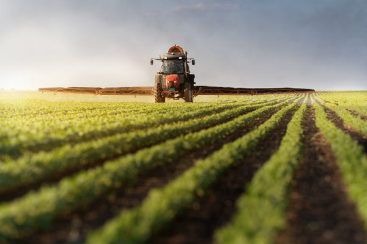
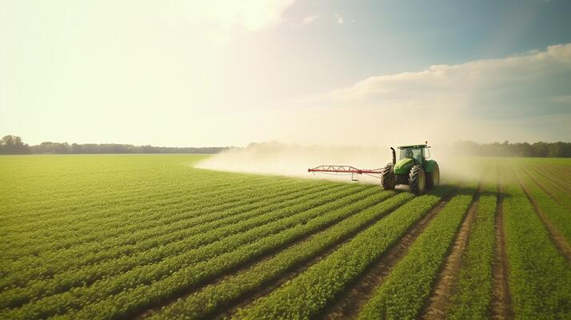
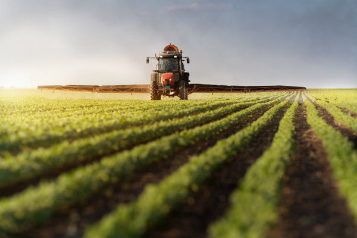
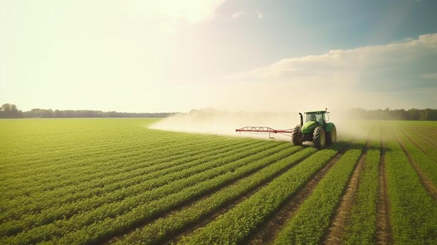
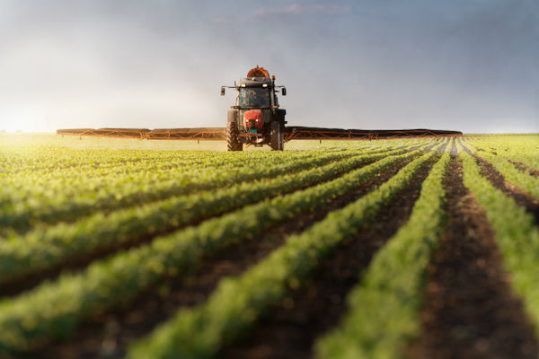
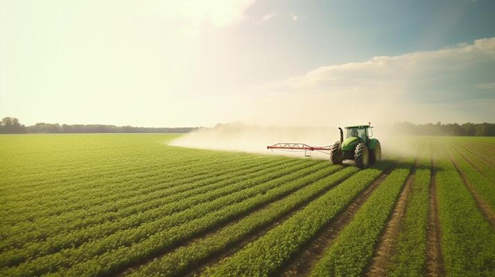
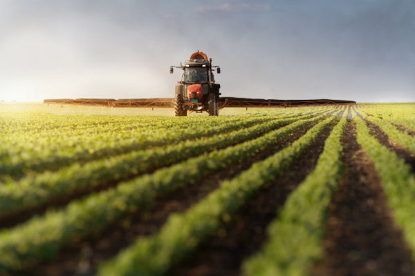
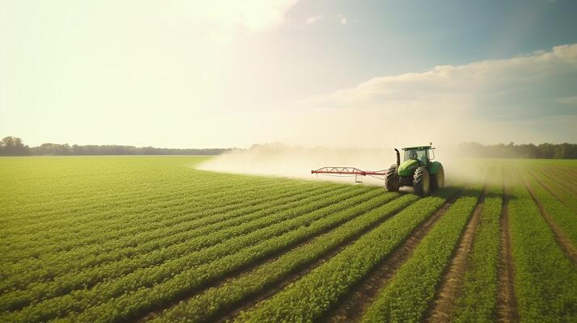

Notre pays a une longue histoire et tradition agricoles, profondément enracinées dans la culture et l'économie nationales. Le poids économique et social de l’agriculture marocaine, son lien étroit avec le monde rural, ainsi que la multiplicité de ses fonctions, notamment alimentaire, économique, sociale et environnementale, en font un des moteurs prioritaires du développement global du pays. Secteur inclusif, il demeure le principal pourvoyeur d’emplois et la principale source de revenus pour les agriculteurs et constitue le socle de la sécurité alimentaire du pays et de l’équilibre de ses territoires. Il est aujourd’hui hissé en modèle de développement sectoriel réussi, reconnu et salué par plusieurs partenaires et organismes internationaux. En effet, Sa Majesté Le Roi Mohammed VI, que Dieu L’assiste, a doté la politique agricole du Maroc d’une vision à long terme, déclinée par des stratégies décennales, qui consiste à fonder les bases d’une agriculture écoefficiente et durable, en tant que levier fondamental de notre souvraineté alimentaire.
Ainsi, le Plan Maroc Vert a été lancé en avril 2008 pour l’horizon 2020, pour faire du développement de l’agriculture et des systèmes alimentaires ainsi que de leur durabilité, plus qu’un désir d’avenir, un impératif du présent.
Cette stratégie solide et intégrée de développement agricole a installé les assises d’une agriculture durable, innovante, compétitive et socialement intégrée. Ayant fixé pour objectif d’accélérer la croissance économique, de réduire la pauvreté et d'assurer la durabilité des ressources de l’agriculture, le développement agricole marocain a emprunté un nouveau virage avec une vision nouvelle.
Adoptant une approche globale et intégrée, touchant l’ensemble des acteurs opérant dans le secteur agricole, ainsi qu’un mode de gouvernance structuré et responsable, cette stratégie a permis d’insuffler une nouvelle dynamique qui a transformé le paysage de l’agriculture nationale, la rendant plus productive, plus compétitive et plus résiliente.
Au terme du Plan Maroc Vert, l’évaluation de ses sorties, de ses performances et de son impact, a mis en évidence le succès de la stratégie dans l’atteinte des objectifs fixés, comme elle a permis de dresser un diagnostic de nouveaux défis qu’affronte le secteur agricole.
Sur la base de cette évaluation et en réponse aux Hautes Orientations Royales dans le discours d'ouverture du Parlement pour l'année 2018, où Sa Majesté a appelé à « consolider les acquis réalisés dans le domaine agricole, et à créer davantage d'opportunités d'emploi et de revenus, en particulier au profit de la jeunesse rurale... dans le but de l’émergence et du renforcement d’une classe moyenne agricole, et d’en faire un facteur de poids et un levier pour le développement économique et social, à l’image du rôle important de la classe moyenne dans les villes », une nouvelle stratégie a été développée. Cette dernière est fondée sur la consolidation des acquis du Plan Maroc Vert, en adoptant une nouvelle vision pour le secteur agricole et une nouvelle gouvernance, en consacrant des capacités et des possibilités modernes au secteur.
Ainsi, la nouvelle stratégie agricole baptisée «Génération Green» a été lancée par Sa Majesté Le Roi, que Dieu L’assiste, le 13 février 2020 à l’Horizon 2030. Elle repose sur les sorties du Plan Maroc Vert, consolide ses acquis, valorise ses enseignements et ses approches, et traite les défis apparus.
Notre agriculture est certes aujourd’hui plus résiliente grâce aux programmes développés et dispositifs mis en place depuis 2008, mais le renforcement de la résilience et de la durabilité du développement agricole, reste l’un de nos principaux défis face à la problématique des changements climatiques qui devient structurelle.
En effet, aujourd'hui, notre engagement est de renforcer notre secteur agricole pour répondre aux défis sérieux du siècle : les changements climatiques violents, les sévères sécheresses très fréquentes, la pénurie de l’eau et les pandémies, sont autant de défis sérieux qui attendent des réponses nouvelles et concrètes.
A ce titre, notre priorité est de promouvoir des pratiques agricoles durables sur la base des fondamentaux agronomiques, de soutenir nos agriculteurs et de contribuer à assurer la sécurité alimentaire pour tous les Marocains.
La Stratégie Génération Green se base sur deux fondements, la priorité à l’élément humain et la pérennisation de la dynamique de développement du secteur agricole.
Plaçant l’élément humain au cœur de ses préoccupations, le premier fondement qui donne la priorité à l’élément humain est décliné à travers 4 axes:
- L’émergence d’une nouvelle génération de classe moyenne agricole ;
- L’émergence d’une nouvelle génération de jeunes exploitants et entrepreneurs ;
- Le développement d’une nouvelle génération d'organisations agricoles ;
- La mise en place de nouveaux mécanismes d’accompagnement.
Le deuxième fondement relatif à la pérennité du développement agricole est concrétisé selon 4 axes:
- La consolidation des filières agricoles par une intervention plus ciblée sur l’amont agricole et une réallocation des efforts sur l’aval ;
- Le développement de chaînes de distribution modernes et efficientes, notamment la structuration et la modernisation de marchés de gros, la réhabilitation des souks, le renforcement des canaux de distribution et des plateformes de stockage… ;
- Le renforcement de la qualité, de l’innovation et des green-techs ;
- La fondation d’une agriculture plus résiliente et éco-efficiente.
Ambitieuse, tout en étant pragmatique et réalisable, cette nouvelle vision stratégique pour le secteur agricole est en ligne avec le cadre tracé par le nouveau modèle de développement et s’inscrit en convergence avec les autres chantiers structurants lancés par Sa Majesté le Roi, que Dieu Le glorifie.
Génération Green est la feuille de route pour le développement de l’agriculture nationale à l’horison 2030. Elle incarne notre engagement envers une agriculture moderne, durable et innovante. Elle constitue une vision ambitieuse pour l'avenir de notre secteur agricole, visant à renforcer les bases de la souveraineté alimentaire pour consolider notre sécurité alimentaire, à améliorer les revenus des agriculteurs et à assurer une gestion responsable des ressources naturelles.
La gouvernance de la déclinaison de Génération Green compte amplement sur la coopération et un partenariat public-privé fort et moderne avec la profession, en vue de garantir le pilotage de la production agricole à travers une organisation intelligente autour des chaines de valeur agricoles. Pour ce faire, nous travaillons activement à établir des partenariats solides avec les organisations professionnelles, le secteur privé, les organisations de la société civile et nos partenaires internationaux, pour partager les connaissances, les ressources et les meilleures pratiques.
Ce site web fournit des informations essentielles sur nos politiques, initiatives, programmes et projets dans les domaines agricole et rural, visant à stimuler la croissance de l'agriculture et le développement rural au Maroc.